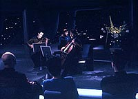
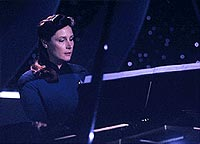
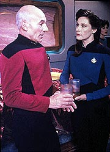
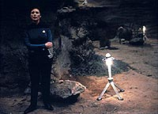
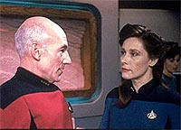

|
MANCHETE
DO EPISDIO
Segmento
fracassa ao tentar dar ao
capito Picard uma paixo arrebatadora
Episdio
anterior | Prximo
episdio
Sinopse:
Data Estelar: 46693.1.
Acordado no meio da noite, Picard fica curioso ao descobrir que
muitas das funes da nave foram desligadas, para alimentar de
energia o departamento de cincias estelares. Ele decide ir at l
e verificar o que est acontecendo, quando conhece a
tenente-comandante Nella Daren, a nova chefe do departamento.
 Nella
e sua equipe esto usando o silncio da madrugada para tentar
construir um mapa matemtico de um sistema solar emergente. Picard
est intrigado por essa mulher amvel e inteligente -- e sua ateno
aumenta a cada noite, quando ele arrebatado pela incrvel
performance de Nella ao piano durante um concerto.
O capito expressa sua apreciao aps o evento, e ela --
impressionada por seu conhecimento musical -- sugere que os dois
toquem juntos qualquer dia. A atrao parece ser mtua.
Na noite seguinte, Picard pratica com sua flauta Ressikana, quando
Nella lhe faz uma visita inesperada, levando junto um teclado. Ela
encoraja o relutante capito a tocar com ela um dueto, que ele comea
a apreciar. Quando eles se encontram de novo, ela leva Picard a uma
interseco de tubos Jefferies onde ela diz haver uma acstica
perfeita. Os dois iniciam outro dueto, mas sua concentrao se
desvia para outra coisa que no a msica -- e eles do um
profundo e caloroso beijo.
Aps o encontro, Picard comea a se sentir inseguro de suas aes.
Mais tarde, aps marcar curso para Bersallis III para estudar as
tempestades de fogo do planeta, ele pede para falar com Troi em
particular em seu gabinete.
L, ele fala francamente sobre sua atrao por Nella e suas
preocupaes sobre ter um relacionamento com algum sob seu
comando. Ele fica aliviado quando Troi o encoraja. Picard ento
revela alguns de seus pensamentos mais particulares com Nella, e
eles voltam a se beijar, levando a relao um passo adiante.
 Entretanto,
Riker est desconfortvel, e diz a Picard que no se sente bem
lidando com as exigncias de Nella por causa de sua relao com o
capito. Picard garante a Riker que sentimentos pessoais no sero
colocados sobre o que for melhor para a nave e ento comenta com
Nella sobre sua situao incomum. Eles concordam que ela no
deveria ceder, mas continuar fazendo seu trabalho da melhor forma
possvel.
Worf interrompe a conversa com a notcia de que as tempestades de
fogo vo atingir Bersallis III muito antes do esperado, ameaando
o posto avanado da Federao ali. Picard ordena que a Enterprise
oferea ajuda na evacuao do posto, enquanto Nella e La Forge
criam um plano para construir um escudo protetor para guardar o
complexo da tempestade.
Riker escolhe Nella para comandar o grupo de instalao do escudo,
e, embora Picard esteja preocupado em mand-la para essa perigosa
misso, ela o lembra de que a relao no pode ficar no caminho
das decises de comando corretas.
Quando a Enterprise chega ao planeta, Nella e sua equipe se
transportam para a superfcie com defletores trmicos para
construir o escudo. Infelizmente, ela descobre que h um problema.
Os membros da equipe precisaro ficar no planeta durante a
tempestade para manter os defletores conectados ao calibr-los
manualmente -- um procedimento que pode custar muitas vidas.
 Picard
est arrasado, mas percebe que esse o nico modo de salvar os
73 colonos que ainda permanecem no planeta, ele ordena o grupo a
ficar, enfrentando a horrvel possibilidade de ter condenado Nella
morte. A tempestade chega e, depois que passa, Picard leva os
sobreviventes a bordo. Nella est entre os ltimos a voltarem, mas
quando seus olhos encontram os de Picard, ele sente algo diferente.
Mais tarde, Nella o perdoa pelas decises que ele precisou tomar,
mas os dois percebem que no podem continuar o relacionamento como
comandante e subordinada. Nella diz a Picard que pedir uma
transferncia, j que, para o amor poder prosseguir, preciso
que ambos estejam separados.
Comentrios:
"Lessons"
carece de uma personalidade prpria que traga algum relevo para o
episdio. Trata-se de um segmento muito bvio e alimentado com
muita falsa encrenca para funcionar. E a "paixonite" de
Picard tratada de forma absolutamente superficial e pouco
convincente.
Que o capito merecia um relacionamento amoroso para desenvolver um
pouco mais sua personalidade diante do pblico, ningum questiona.
Mas a forma com que o problema foi lidado aqui no merece nem
muitas consideraes.
Houve de fato boas intenes: a idia de mostrar a dualidade
entre o capito e o homem e as implicaes de o lder da tripulao
ter um relacionamento com uma subordinada so tratados aqui. Mas
falta fora motriz suficiente para que cada um desses temas seja
satisfatoriamente interessante.
Ao contrrio do que deveria ter sido feito, todo o pacote
atirado de uma vez s no telespectador, com um desfecho to bvio
quanto uma comdia romntica de quinta categoria. E Picard no
parece francamente se conciliar bem com seu comportamento neste episdio.
Por mais que eu tenha visto, ainda no consigo acreditar que o
capito da nave capitnea da Federao estava passeando pelos
tubos Jefferies e tocando flauta.
A msica foi uma forma at interessante de aprofundar os laos
entre ele e Nella Daren, e a citao aos eventos de "The
Inner Light" foi especialmente oportuna. Mas nada
supera o constrangimento de ver Patrick Stewart empolgadssimo por
uma execuo em dueto de "Frre Jacques" (por mais que
a msica de fato tenha ficado boa).
 A
nica coisa que de fato soa verdadeira neste episdio e que parece
condizente com a dignidade dos personagens a amizade entre
Jean-Luc e Beverly. Aparentemente os dois decidiram colocar de lado
a tenso sexual que sempre existiu entre eles e viver uma madura
relao fraternal. O caf da manh dos dois soa como um belo
toque do "cotidiano" do capito, sem introduzir algo que
parea aliengena ao que se conhecia dos personagens ou incompatvel
com suas personalidades.
O recurso voltaria a ser usado no episdio seguinte, "The
Chase", reforando ainda mais esse senso de
continuidade e de vida rotineira.
De resto, o episdio realmente no digno de muita ateno. Alm
do roteiro esdrxulo, sofremos com efeitos especiais pouco
convincentes (como o cenrio do planeta a ser atingido pela
tempestade) e uma direo apagada de Robert Wiemer. Stewart no
est muito bem, algo raro para Picard, e os outros personagens tm
participao quase nula.
 Mas
nada supera o fator "falsa encrenca". Terrvel ver como
toda a "crise da tempestade" criada especialmente para
levar Nella Daren superfcie. E a tentativa de tornar a reunio
de oficiais um preldio para a convocao de Daren ainda mais
constrangedora. Onde normalmente s vemos a tripulao snior,
temos aqui dois oficiais nunca antes vistos, a recm-chegada Daren
e o insignificante "Marks", cujo nome mencionado, que
passa a reunio inteira calado. Pattico.
Isso um belo indicativo da tnica do episdio. Para fazer a
premissa funcionar, os roteiristas ultrapassaram todos os limites do
razovel, tornando um episdio potencialmente vlido num pastelo
de constrangedoras convenincias de enredo.
No era preciso nem ver at o final para saber que Daren no iria
morrer e que pediria transferncia da Enterprise, para nunca mais
aparecer na srie. Ainda bem. "Lessons" um episdio
que fica melhor quanto antes nos esquecemos dele.
Citaes:
Picard - "But your choice in
that arpeggio was delightful. Not at all what one would expect."
("Mas sua escolha naquele arpeggio foi maravilhosa. Nada do que
algum poderia esperar.")
Daren - "Well, captain, now that I am on your ship, maybe
you should start expecting the unexpected."
("Bem, capito, agora que estou em sua nave, talvez voc
devesse comear a esperar o inesperado.")
Trivia:
 Aqui voltamos a ouvir o tema de "The
Inner Light", tocado por Picard em sua flauta. O tema
foi criado pelo compositor Jay Chattaway.
Aqui voltamos a ouvir o tema de "The
Inner Light", tocado por Picard em sua flauta. O tema
foi criado pelo compositor Jay Chattaway.
Wendy Hughes, que interpreta a tenente-comandante Nella Daren,
natural da Austrlia e nasceu em 1952.
Ficha
tcnica:
Escrito por Ronald Wilkerson
& Jean Louise Matthias
Direo de Robert Wiemer
Exibido em 05/04/1993
Produo: 145
Elenco:
Patrick Stewart como
Jean-Luc Picard
Jonathan Frakes como William Thomas Riker
Brent Spiner como Data
LeVar Burton como Geordi La Forge
Michael Dorn como Worf
Gates McFadden como Beverly Crusher
Marina Sirtis como Deanna Troi
Elenco convidado:
Wendy Hughes como
Nella Daren
Episdio
anterior | Prximo
episdio
|